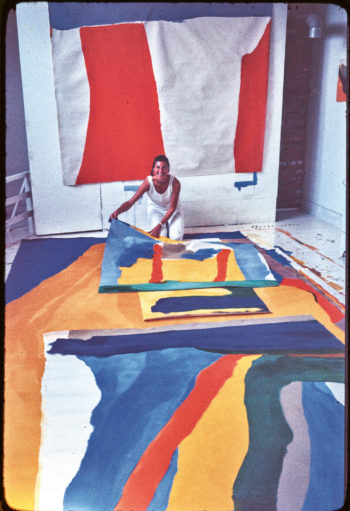
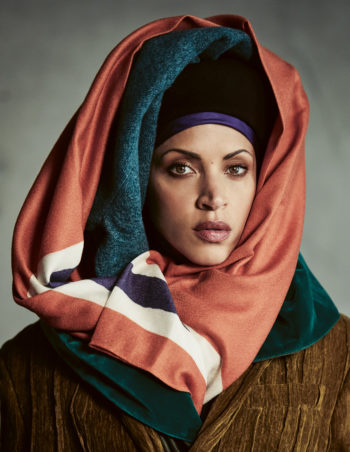
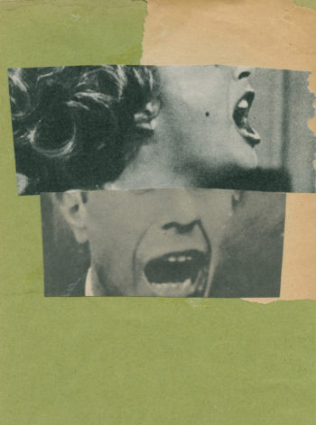
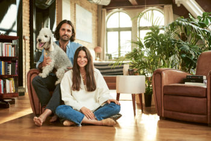
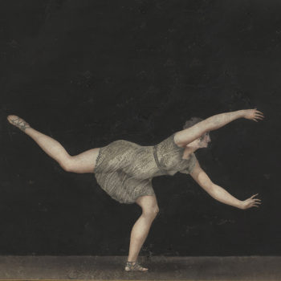
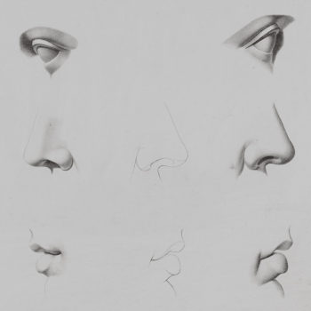
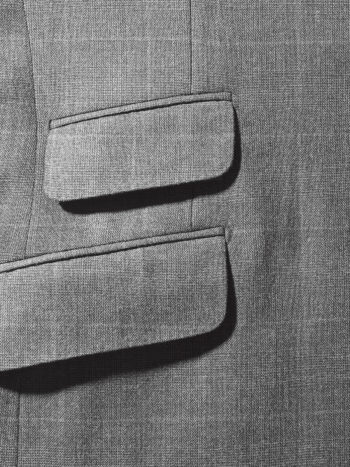
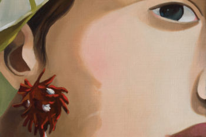

ROCK STEADY
A breath of fresh air amid the ancient Stone Forest of southwestern China.

Issue 37
The importance of nature for both our personal wellbeing and global prosperity has never been clearer. With a cautious return to the great outdoors now on our shared horizon, Kinfolk heeds the enticing call of the wild.
-

DESIGN,PARTNERSHIPS
Sea Change
In partnership with Fritz Hansen, Kinfolk absorbs the transformative power of the sea.
-

ARTS & CULTURE,ISSUE 37
Mona Chalabi
On sending spreadsheets viral.
-

ARTS & CULTURE,ISSUE 37
Ron Finley
An exclusive excerpt from our forthcoming book, The Kinfolk Garden.
-
 ARTS & CULTURE,ISSUE 37
Archive: Helen Frankenthaler
On the legacy of artist Helen Frankenthaler—a self-described “square” and the pioneer of the freewheeling, feeling-focused Color Field movement.
-

ARTS & CULTURE,FASHION,ISSUE 37
The Click Farm
Meet the influencers, and owners, fighting like cats and dogs for your likes.
-

ARTS & CULTURE,ISSUE 37
Haatepah Clearbear
First, Haatepah Clearbear learned about his past. Now the young model is using that knowledge to advocate for Native American futures—and the planet.
-

ARTS & CULTURE,ISSUE 37
Vizcaya Gardens
A garden once dismissed as a stylistic mishmash now conjures nostalgia for an impossible place.
-
 FASHION,ISSUE 37
Material Girl
The most interesting people, stories and haircuts all have layers. This fall, so does your wardrobe.
-

ARTS & CULTURE,ISSUE 37
Rendered Impossible
Those who can only dream of the great outdoors may as well have some fun while doing it.
Current Issue
From wilderness to windowsill: Plant roots in the world around you.
Buy NowSelected Stories
-
ARTS & Culture,ISSUE 37
Ann Tyler
The author of sprawling family dramas on her own epic half-century of writing.
-
Disign,Issue 37
Downsizing
Unable to travel during lockdown, architects Salem Charabi & Rasmus Stroyberg decided to recreate a favorite building.
-
 ARTS & Culture,ISSUE 37
Mood Bores
On the aesthetics of inspiration.
-
ARTS & Culture,ISSUE 37
Jane Goodall
From her perch in the tiny Tanzanian nature reserve of Gombe, primatologist Jane Goodall changed how we understand the nature of chimpanzees—and ourse
-
ARTS & Culture,ISSUE 37
Short Histories of Nearly Everything
The bestsellers of the last decade look like a college reading list.Debika Ray looks at the rise of the “brainy book.”
-
 Disign,Issue 37
At Home With: Nanushka
Meet the bold couple who took their Budapest brand global.
Kinfolk Dosan
A New Community Space in Seoul
FASHION, ISSUE 37
ROCK STEADY
A breath of fresh air amid the ancient Stone Forest of southwestern China.
The Kinfolk Long Listen
-
 audio
The Great Influencer Scam
Breaking down the logic of MLMs
-
 audio
The History of Personality Tests
Strongly agree, agree, or disagree?
-
audio
Beyond Monogamy
How does non-monogamy work?
-
audio
A Guide to Sleep
How sleep became the ultimate luxury.
-
audio
Rising Stars
What does the future hold for astrology?
-
audio
Diets Through the Ages
A history of bad advice.
ARTS & CULTURE
RENDERED IMOSSIBLE
Those who can only dream of the great outdoors may as well have some fun while
doing it
ARTS & CULTURE
Ron Finley
In an excerpt from our forthcoming book, The Kinfolk Garden, Stephanie d’Arc Taylor meets Ron Finley. By sowing seeds in the barren public spaces of South Central Los Angeles, Finley reaped an unexpected reward: a new-found calling as a community activist. With each project that takes root, his motivation only grows. Words by Stephanie d’Arc Taylor. Photography by Justin Chung.
Object Matters
-

ARTS & CULTURE, ISSUE 36
Object Matters
A fluff-free history of the pillow.
-

FOOD, ISSUE 34
Object Matters: Sausages
A silly history of sausages.
-
ARTS & CULTURE, ISSUE 35
Object Matters
A timely history of the alarm clock.
-
ARTS & CULTURE, ISSUE 37
Object Matters
A potted history of the bonsai tree.
-
 ARTS & CULTURE, ISSUE 30
Object Matters
A short history of pockets—and why women lack them.
-
DESING, ISSUE 29
Object Matters: Paper Clips
A short history of the paper clip.
Director’s Cut
-
FILMS, ISSUE 36
Phillip Youmans
The 20-year-old director talks to Sharine Taylor about walking the
READ MORE
tightrope between teen prodigy and award-winning filmmaker. -
FILMS, ISSUE 33
Desiree Akhavan
The Iranian-American filmmaker bringing her “weird and sexy”
READ MORE
stories—and her parents—to set. -
ARTS & CULTURE,ISSUE 22
Theresa Traore
DahlbergWhen Theresa Traore Dahlberg realized that she couldn’t relate to
READ MORE
narratives about women in West African films, she decided to make
her own.
Popular
-
ARTS & CULTURE ISSUE 36
Jenny Slate
What do you get when you cross a free spirit with a stand-up comedian? At home in Los Angeles, Jenny Slate delivers the punch line.
-
-
ARTS & CULTURE ISSUE 36
Birdwatching: Jason Ward
Whether trapped in a bad situation or just terrible traffic, watching birds in flight has always helped naturalist Jason Ward unwind.
-
-
DESIGN ISSUE 36
At Work With: Hariri & Hariri
Sisters Gisue Hariri and Mojgan Hariri have always been “partners in crime." Charles Shafaieh meets them at their New York architecture studio.
-
 ARTS & CULTURE FASHION ISSUE 35
Soft Strokes
Fashion often looks to art for inspiration, so why not the other way round?
Sign up to the Kinfolk newsletter
YOUR EMAIL
SUBMIT
I’ve read and accept the terms & conditions